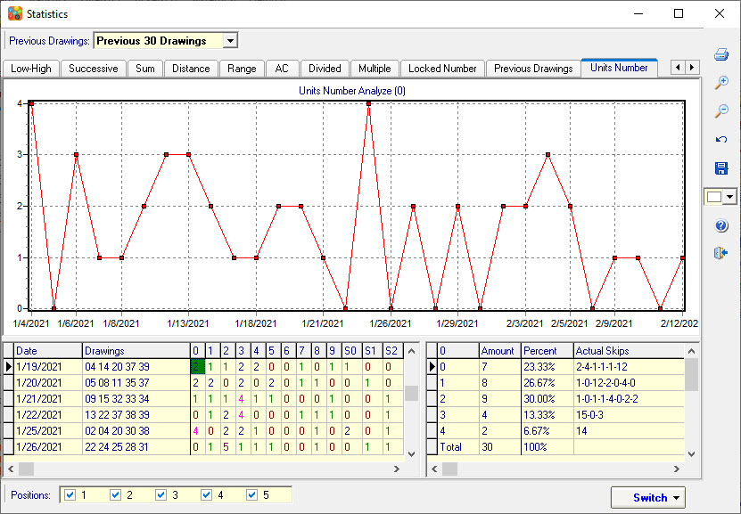

Units Number Analysis |
Click menu->Statistics->Units Number to open the Units Number
analysis.
0: Break down the numbers in the number combination into two digits (First digit and Second digit) and count the digit “0” amount.
1: Counts the digit “1” amount.
2: Counts the digit “2” amount.
3: Counts the digit “3” amount.
4: Count the digit “4” amount.
5: Counts the digit “5” amount.
6: Counts the digit “6” amount.
7: Counts the digit “7” amount.
8: Counts the digit “8” amount.
9: Counts the digit “9” amount.
S0: Break down the numbers in the number combination into two digits (First digit and Second digit) and count the Second digit “0” amount.
S1: Counts the Second digit “1” amount.
S2: Counts the Second digit “2” amount.
S3: Counts the Second digit “3” amount.
S4: Counts the Second digit “4” amount.
S5: Counts the Second digit “5” amount.
S6: Counts the Second digit “6” amount.
S7: Counts the Second digit “7” amount.
S8: Counts the Second digit “8” amount.
S9: Counts the Second digit “9” amount.
High Units Count: Counts how many of these (High Units) are in the winning line. How to calculate High Units? We have 10 units in lottery ( 0, 1, 2, 3, 4, 5, 6, 7, 8, 9). These units can be first units (First digit) or end units (Second digit) in a number. We will use only the last four units as high units (6, 7, 8, and 9).
Odd Units Count: Counts how many of the Odd Units (First digit and Second digit) are in the winning line. Odd Units from 0-9 are: 1, 3, 5, 7, 9. So there are only 5 Odd Units. Do not count duplicates.
Lowest 4 Units Count: Counts how many of the Lowest 4 Units (First digit and Second digit) are in the winning line. We consider only these Units as lowest: 1, 2, 3, 4. Do not use the zero units. So there are only 4 units.
Successive Paired Units Count: Counts how many of the Successive Paired Units (First digit and Second digit) are in the winning line. We have 10 units in a lottery ( 0, 1, 2, 3, 4, 5, 6, 7, 8, 9). We pair them into successive pairs of units: 01, 12, 23, 34, 45, 56, 67, 78, 89. Count ONLY from these numbers.
Pairs Count Odd and Even Units: Counts how many of the Pairs Count Odd and Even Units (First digit and Second digit) are in the winning line. Only a number with both Odd and Even units is counted. Example of paired units Odd and Even together: 01, 03, 05, 07, 09, 10, 12, 14, 18, 21, 23, 25, 27, 29, 30, 32, 34, 36, 38, 41, 43, 45, 47 and so on. Uses ONLY these numbers to find pairs in a winning line with both Odd and Even units.
InterChangeable Units Count: Counts how many of the InterChangeable Units (First digit and Second digit) are in the winning line. Every lottery number contains 2 units, first and second units, if we change their positions then we get a new number, this new number must not be bigger than the biggest number in your lottery game. Example: number 34 (The first unit is 3 and the second unit is 4) we can change unit positions to 43 and the new number is still less than 45 in the 6/45 lottery. Other possible interchangeable numbers for 6/45 lotto include: 01, 02, 03, 04,10, 12, 13, 14, 20, 21, 23, 24, 30, 31, 32, 34, 40, 41, 42, 43. So there are 20 numbers in the 6/45 lotto game, this filter uses these numbers to find winning numbers which its unit positions can be interchanged. Do not include the numbers: 11, 22, 33, 44…
Count for 1 2 3 Units: Counts how many of the 1 2 3 Units (First digit and Second digit) are in the winning line. The most drawn units in any winning line e.g 6/45 is unit 1, unit 2, and unit 3. Counts these units in a winning line including repeaters.
Even Units Count: Counts how many of the Even Units (First digit and Second digit) are in the winning line. Even Units from 0-9 are: 0, 2, 4, 6, 8. Do not use zero. So there are only 4 Even Units.
Pairs Count Even Units Only: Counts how many of the Pairs Count Even Units Only (First digit and Second digit) are in the winning line. Both units are Even. Example of Even pairs: 02, 04, 06, 08, 20, 22, 24, 26, 28, 40, 42, 44, ..Zero is included because it is an Even unit.
Pairs Count for 1 2 3 Units: Counts how many of the Pairs Count for 1 2 3 Units (First digit and Second digit) are in the winning line. Example: 11, 12, 13, 22, 23, 31, 32, 33. Counts the number of pairs made with 1, 2, and 3 in a line.
Successive End Units: Counts how many of the Successive End Units (First digit and Second digit) are in the winning line. We have 10 units in a lottery ( 0, 1, 2, 3, 4, 5, 6, 7, 8, 9). These units can be first units or second-end units in a number. For example, number 34 (The first unit is 3 and the second unit is 4). We will count only the second units for the successive count.
Pairs Count Odd units Only: Both units are Odd. Example of Odd pairs: 11, 13, 15, 17, 19, 31, 33, 35, 37, 39, 51, …Zero is not counted because it is an Even unit. Counts the number of pairs in a winning line.
The Unit Number Sum: Counts The Unit (Second digit) number Sum value in the winning line. The second digit of a number, for example, 01, 09, 14, 15, 22, 39 the Second digit number is 1, 9, 4 5, 2, 9. For example, 03, 07, 19, 21, 42, 59, Unit Number Sum is 3+7+9+1+2+9=31, so Unit Number Sum=31.
The Unit Number Different Number Count: Counts how many of The Unit Number Different Number (Second digit) are in the winning line. The second digit of a number, for example, 01, 09, 14, 15, 22, 39 the end unit numbers are 1, 9, 4 5, 2, 9, For example, 03, 07, 19, 21, 42, 59, Unit Number 3, 7, 9, 1, 2, 9, Different Number 3, 7, 9, 1, 2 so Unit Number Different Number=5.
Unit Number Group Count: Counts how many of the Unit Number Group (First digit and Second digit) are in the winning line.
Same End Units with Last Drawn: Counts how many of the Same End Units (Second digit) with Last Drawn are in the winning line..

Home
Page: http://www.samlotto.com
Support:support@samlotto.com
Copyright: © SamLotto Lottery Software Team All rights reserved.